▲ 해가 진 직후 하늘은 아직 푸르지만 도로 위는 전조등과 브레이크등이 번져 보이기 시작한다 ⓒ Immanuelle / Wikimedia Commons (CC BY 4.0)
"6시에 퇴근하는데 왜 벌써 깜깜하지?" 10월 초만 해도 서울의 일몰은 오후 6시를 넘겼다. 그런데 한 달이 지나면 오후 5시 반이 되기 전에 해가 진다. 문제는 해가 지는 속도가 아니라, 퇴근 시간대의 교통량은 그대로인데 도로의 밝기만 바뀐다는 점이다.
이 글은 한국천문연구원(KASI) 생활천문관의 공개 계산식으로 2026년 10~12월 일몰 시각을 직접 계산하고, 경찰청 시간대별 사고 통계와 도로교통공단 월별 주야별 통계를 내려받아 "일몰이 퇴근길과 겹치는 날"을 표로 만든 것이다. 확인되지 않는 항목은 확인하지 못했다고 적었다.
1. 2026년 10~12월 일몰표 — 서울·부산·광주·강릉·제주
KASI 생활천문관 페이지는 계산식(JavaScript)을 공개하고 있다. 카프리즘은 이 계산식을 그대로 실행해 도시별 일몰 시각을 뽑았다. 일몰은 태양 상단이 지평선에 닿는 시점(태양 고도 -0.8333도)이고, 초 단위는 버렸다. 도시 좌표는 시청 부근의 대표 좌표를 썼기 때문에 KASI '월별 해/달 출몰시각' 표와 1~2분 차이가 날 수 있다.
| 도시 | 10/1 | 10/15 | 11/1 | 11/15 | 12/1 | 12/15 |
|---|---|---|---|---|---|---|
| 서울 | 18:16 | 17:56 | 17:34 | 17:21 | 17:14 | 17:14 |
| 부산 | 18:08 | 17:49 | 17:29 | 17:18 | 17:11 | 17:12 |
| 대구 | 18:10 | 17:51 | 17:30 | 17:18 | 17:11 | 17:12 |
| 광주 | 18:17 | 17:58 | 17:38 | 17:27 | 17:20 | 17:21 |
| 강릉 | 18:08 | 17:48 | 17:26 | 17:13 | 17:06 | 17:06 |
| 제주 | 18:19 | 18:01 | 17:42 | 17:31 | 17:25 | 17:27 |
서울 기준으로 10월 1일부터 11월 1일까지 한 달 사이 일몰이 42분 당겨지고, 12월 1일까지는 62분 당겨진다. 가장 빨리 지는 시기가 12월 22일 동지가 아니라 11월 말~12월 초라는 점도 눈여겨볼 만하다. 일몰이 가장 빠른 날과 일출이 가장 늦은 날은 서로 다르다.
대구·대전·인천은 위 표에 없어 따로 계산했다. 아래 표는 KASI 실행값이 아니라 NOAA 태양위치 알고리즘을 카프리즘이 별도로 돌린 값(분 단위 반올림)이며, 서울을 같은 방식으로 다시 계산해 기준선으로 함께 실었다. 시청 부근 좌표를 썼고 위 표와 1분 안팎의 차이가 날 수 있다.
| 도시 | 10/1 | 10/15 | 11/1 | 11/15 | 12/1 | 12/15 | 18시 이전 첫날 | 일몰 최단일 |
|---|---|---|---|---|---|---|---|---|
| 서울 (비교용) | 18:16 | 17:55 | 17:34 | 17:21 | 17:14 | 17:15 | 10/12 | 12/7 17:14 |
| 인천 | 18:17 | 17:57 | 17:35 | 17:23 | 17:15 | 17:16 | 10/13 | 12/7 17:15 |
| 대전 | 18:15 | 17:55 | 17:35 | 17:22 | 17:16 | 17:16 | 10/12 | 12/6 17:15 |
| 대구 | 18:10 | 17:51 | 17:30 | 17:19 | 17:12 | 17:13 | 10/9 | 12/6 17:11 |
해석은 두 가지다. 첫째, 같은 시각 퇴근이라도 대구는 서울보다 일몰이 2~6분 빠르다(경도 차이, 10월 초에 격차가 가장 크다). 대전·인천은 서울과 2분 이내라 사실상 같은 일정으로 봐도 된다. 둘째, 네 도시 모두 일몰이 가장 빠른 날은 12월 6~7일 전후로 나왔다. 계산 방식이 달라 정확한 날짜는 며칠 흔들리지만, 11월 말부터 12월 중순까지는 일몰이 사실상 같은 시각에 머문다는 점은 같다.
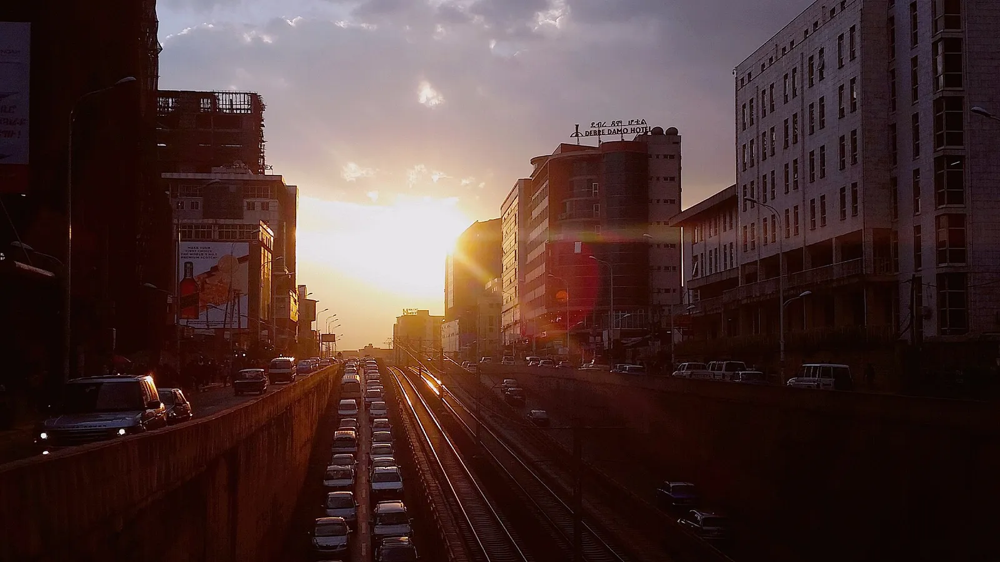
▲ 해가 낮게 걸리면 정면 도로는 역광으로 변하고 앞차 윤곽이 뭉개진다. 참고 이미지(촬영지 미상) ⓒ Abenezer markos / Wikimedia Commons (CC BY-SA 4.0)
📍 일몰 = 어두워지는 시각이 아니다
일몰 후 약 26~28분(서울 계산값 기준)까지가 시민박명이다. 하늘은 아직 밝지만 도로 위 보행자·자전거·어두운 색 차량은 이미 식별하기 어려운 구간이다. 이 시간대가 운전자에게 가장 애매하다. 하늘이 밝아 전조등을 켜지 않게 되는데, 노면과 사람은 이미 어둡다.
본인이 자주 다니는 지역의 정확한 일몰 시각은 천문연구원 계산 페이지에서 확인할 수 있다. 한국천문연구원 일출·일몰 계산 바로가기
2. 퇴근 시간과 겹치는 날 — "18시 퇴근"이 어두워지는 시점
퇴근 시간대를 18시 정시 퇴근으로 가정하고, 서울 기준 일몰·시민박명 종료 시각과 겹치는 정도를 계산했다. 시민박명 종료 시각은 같은 계산식에서 태양 고도 -6도를 기준으로 구했다.
| 날짜 | 일몰 | 시민박명 종료 | 18:00 시점 판정 |
|---|---|---|---|
| 10/1 | 18:16 | 18:42 | 일몰 16분 전, 아직 낮 |
| 10/15 | 17:56 | 18:22 | 일몰 4분 후, 박명 구간 진입 |
| 11/1 | 17:34 | 18:01 | 일몰 26분 후, 박명 거의 끝 |
| 11/15 | 17:21 | 17:49 | 일몰 39분 후, 이미 밤 |
| 12/1 | 17:14 | 17:42 | 일몰 46분 후, 완전한 밤 |
같은 방식으로 18시 이전에 일몰이 시작되는 첫날을 구하면 서울 10월 13일, 부산 10월 8일, 광주 10월 14일, 강릉 10월 7일이다. 즉 지금(10월 초)은 퇴근길이 아직 낮에서 밤으로 바뀌는 문턱에 있고, 10월 중순 이후에는 퇴근길 후반부가 어둠 속에 놓인다. 다만 서울의 경계일은 18:00에 아슬아슬하게 걸려 있어 ±1일 오차가 있다. 별도 검산(미국 NOAA 알고리즘)에서는 서울 10월 12일 일몰이 17:59 40초 안팎으로 나와 하루 앞선다.
퇴근 시각을 바꾸면 어떻게 달라질까. 서울 기준으로 17:30~19:30 퇴근 시각별 도로 상태를 일몰(태양 고도 -0.8333도)과 시민박명 종료(-6도) 기준으로 나눴다. NOAA 알고리즘 별도 계산이라 위 표와 1분 안팎 다를 수 있다.
| 날짜 | 일몰 | 박명 종료 | 17:30 | 18:00 | 18:30 | 19:00 | 19:30 |
|---|---|---|---|---|---|---|---|
| 10/3 | 18:13 | 18:39 | 낮 | 낮 | 박명 | 밤 | 밤 |
| 10/15 | 17:55 | 18:22 | 낮 | 박명 | 밤 | 밤 | 밤 |
| 11/1 | 17:34 | 18:01 | 낮 | 박명 | 밤 | 밤 | 밤 |
| 11/15 | 17:21 | 17:49 | 박명 | 밤 | 밤 | 밤 | 밤 |
| 12/1 | 17:14 | 17:43 | 박명 | 밤 | 밤 | 밤 | 밤 |
10월 3일에는 18:00 퇴근이 아직 낮이지만, 10월 15일이면 18:00이 이미 박명이고 18:30부터 밤이다. 11월 15일 이후에는 17:30 퇴근도 박명에 걸린다. 아래는 같은 18:00 기준을 8개 도시로 넓힌 표다.
| 도시 | 10/15 | 11/1 | 11/15 | 12/1 |
|---|---|---|---|---|
| 서울 | 일몰 5분 후 · 박명 | 일몰 26분 후 · 박명 | 일몰 39분 후 · 밤 | 일몰 46분 후 · 밤 |
| 인천 | 일몰 3분 후 · 박명 | 일몰 25분 후 · 박명 | 일몰 37분 후 · 밤 | 일몰 45분 후 · 밤 |
| 대전 | 일몰 5분 후 · 박명 | 일몰 25분 후 · 박명 | 일몰 38분 후 · 밤 | 일몰 44분 후 · 밤 |
| 대구 | 일몰 9분 후 · 박명 | 일몰 30분 후 · 밤 | 일몰 41분 후 · 밤 | 일몰 48분 후 · 밤 |
| 광주 | 일몰 2분 후 · 박명 | 일몰 22분 후 · 박명 | 일몰 33분 후 · 밤 | 일몰 39분 후 · 밤 |
| 부산 | 일몰 11분 후 · 박명 | 일몰 30분 후 · 밤 | 일몰 42분 후 · 밤 | 일몰 48분 후 · 밤 |
| 강릉 | 일몰 12분 후 · 박명 | 일몰 34분 후 · 밤 | 일몰 47분 후 · 밤 | 일몰 54분 후 · 밤 |
| 제주 | 일몰 1분 전 · 낮 | 일몰 18분 후 · 박명 | 일몰 29분 후 · 밤 | 일몰 34분 후 · 밤 |
계산 방식: 경과분 = 18:00 - 일몰 시각(분 단위 반올림), 박명 종료는 태양 고도 -6도 시각이다. 인천·대전은 서울과 2분 이내로 거의 같고, 부산·대구·강릉은 같은 날 서울보다 2~8분 일찍 어두워진다. 서쪽의 광주·제주는 서울보다 늦게 어두워져 10월 15일 제주는 18:00이 일몰 1분 전이다. 11월 1일 기준 가장 일찍 어두워지는 강릉(일몰 34분 후)과 가장 늦은 제주(18분 후)의 격차는 16분이다.
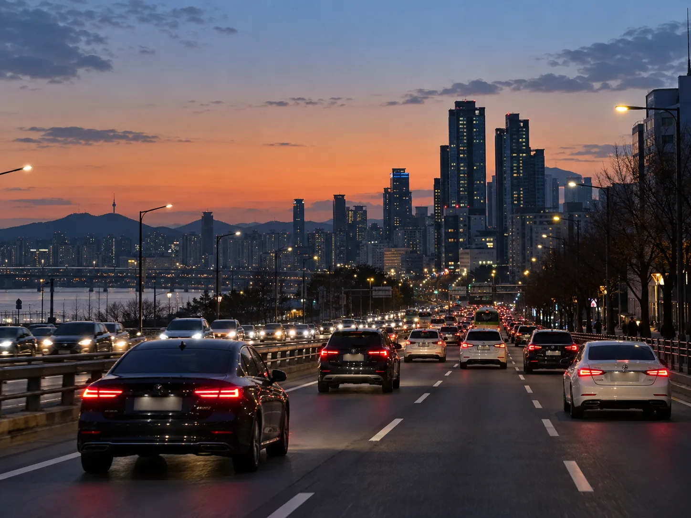
▲ 하늘에 노을이 남아 있어도 도로는 이미 어두워진다. 이 시점에 전조등과 미등을 켠 차가 먼저 눈에 띈다. 설명용 AI 생성 이미지이며 실제 장소·차량이 아님 ⓒ AI 생성 이미지(카프리즘 제작)
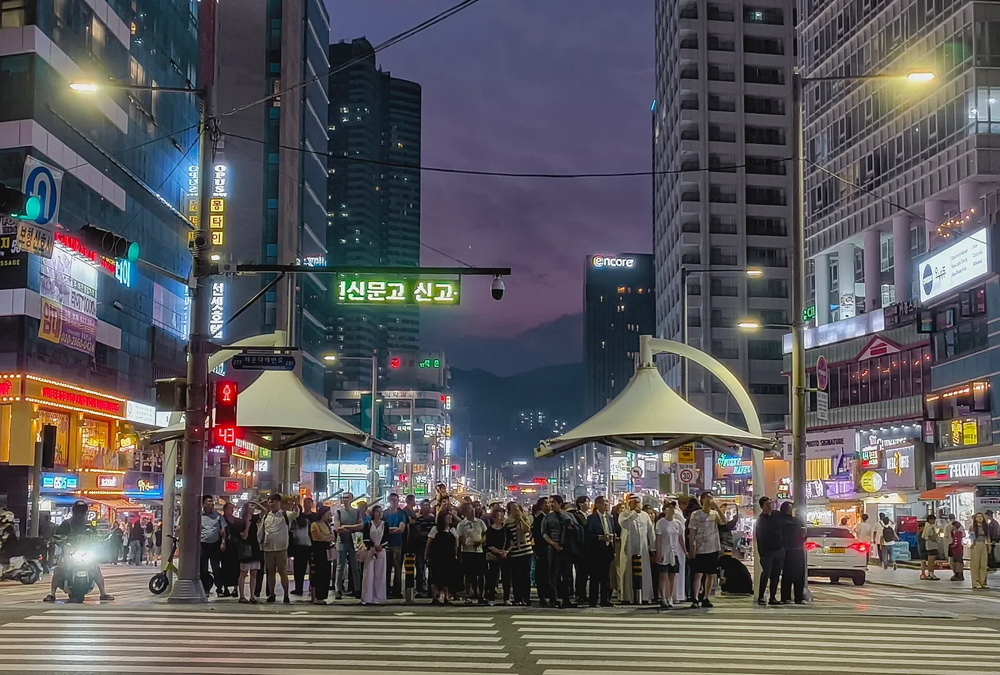
▲ 해가 진 직후 횡단보도 앞은 보행자가 몰리지만 운전자에게는 이들이 가장 늦게 보인다 (부산 해운대구 구남로) ⓒ Pranay chakraborty 2004 / Wikimedia Commons (CC BY 4.0)
✅ 이번 달에 바뀌는 것들
· 서울은 10월 3일 18:13, 10월 10일 18:03, 10월 17일 17:53, 10월 24일 17:44에 일몰 (계산값)
· 일주일에 약 10분씩 일몰이 당겨진다 — 지난주와 같은 시간에 퇴근해도 어둠의 정도가 다르다
· 18시 퇴근자 기준으로 일몰 전 마지막 15분이 사라지는 시점이 10월 중순이다
3. 시간대별 사고 — 16~20시가 하루 중 가장 많다
경찰청이 공공데이터포털에 공개한 '시간대별 교통사고 건수'(2019~2024년, 2시간 단위)를 내려받아 비중과 증감률을 계산했다. 이 표는 사고 건수이며 사고율(교통량 대비)이 아니다. 하루 중 교통량이 많은 시간대에 사고가 많은 것은 당연한 면이 있다.
| 시간대 | 2019년 | 2024년 | 2024년 비중 | 2019 대비 |
|---|---|---|---|---|
| 00~02 | 9,708 | 6,084 | 3.1% | -37.3% |
| 02~04 | 5,703 | 3,395 | 1.7% | -40.5% |
| 04~06 | 6,359 | 4,652 | 2.4% | -26.8% |
| 06~08 | 13,178 | 11,825 | 6.0% | -10.3% |
| 08~10 | 23,971 | 21,912 | 11.2% | -8.6% |
| 10~12 | 22,271 | 20,817 | 10.6% | -6.5% |
| 12~14 | 24,044 | 22,033 | 11.2% | -8.4% |
| 14~16 | 25,910 | 23,364 | 11.9% | -9.8% |
| 16~18 | 29,159 | 27,479 | 14.0% | -5.8% |
| 18~20 | 31,923 | 27,002 | 13.8% | -15.4% |
| 20~22 | 21,667 | 17,010 | 8.7% | -21.5% |
| 22~24 | 15,707 | 10,776 | 5.5% | -31.4% |
계산 방식은 단순하다. 비중 = 해당 시간대 건수 ÷ 2024년 표 합계(196,349건), 증감 = (2024 - 2019) ÷ 2019이다. 참고로 4절의 2025년 월별 통계 연간 사고(193,889건)는 이 합계(196,349건)보다 1.25% 적다. 두 파일의 집계 기준이 같다고 확인한 것은 아니므로 연도 간 직접 비교는 참고용이다. 2시간 평균(약 16,362건)과 비교하면 18~20시는 약 1.65배다.
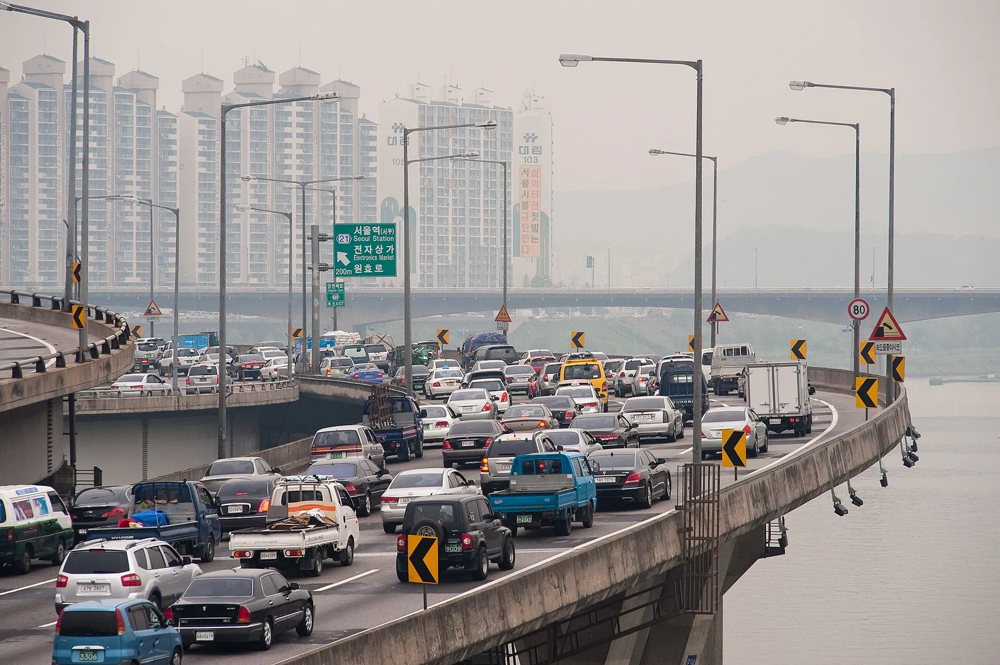
▲ 퇴근 시간대 한강변 간선도로는 교통량이 몰려, 해가 지는 순간 같은 도로 위 노출이 극단적으로 커진다 (서울 강변북로) ⓒ Doo ho Kim / Wikimedia Commons (CC BY-SA 2.0)
📍 표에서 읽을 수 있는 한 가지 변화
2019~2023년에는 18~20시가 16~18시보다 사고가 많았다. 그런데 2024년에는 16~18시(27,479건)가 18~20시(27,002건)를 6년 표에서 처음으로 앞질렀다. 이 표만으로는 이유를 알 수 없다. 퇴근·회식 문화의 변화 같은 추정은 가능하지만, 확인된 사실은 아니다.
| 시간대 | 2019 | 2020 | 2021 | 2022 | 2023 | 2024 |
|---|---|---|---|---|---|---|
| 16~18시 | 29,159 | 27,051 | 27,502 | 26,537 | 27,016 | 27,479 |
| 18~20시 | 31,923 | 29,779 | 29,483 | 27,433 | 27,405 | 27,002 |
12개 구간 가운데 6년간 감소폭이 가장 작은 것이 16~18시(-5.8%)다. 오후 4~6시 구간은 사고가 줄어드는 속도가 가장 느린 시간대다.
4. 월별 주야별 통계 — 10월 야간 사고가 연중 최다
도로교통공단 '월별 주야별 교통사고 통계'(2025년, 공공데이터포털)는 낮(06~18시)과 밤(18~06시)을 월별로 나눈다. 시간 구간이 퇴근길만이 아니라 밤 전체와 새벽까지 포함하므로 "퇴근길 사고"로 읽으면 안 된다. 다만 일몰이 앞당겨지는 가을 변화는 이 표에서 간접적으로 확인된다.
| 월 | 야간 사고 | 야간 비중 | 야간 사망자 | 야간 사망/100건 |
|---|---|---|---|---|
| 1월 | 4,884 | 35.5% | 85 | 1.74 |
| 2월 | 4,620 | 35.5% | 64 | 1.39 |
| 3월 | 4,986 | 34.1% | 86 | 1.72 |
| 4월 | 5,271 | 32.2% | 62 | 1.18 |
| 5월 | 5,420 | 33.2% | 78 | 1.44 |
| 6월 | 5,212 | 32.2% | 94 | 1.80 |
| 7월 | 5,757 | 32.3% | 102 | 1.77 |
| 8월 | 5,623 | 33.8% | 113 | 2.01 |
| 9월 | 5,892 | 33.8% | 106 | 1.80 |
| 10월 | 6,327 | 37.0% | 101 | 1.60 |
| 11월 | 5,946 | 34.1% | 109 | 1.83 |
| 12월 | 6,188 | 36.1% | 79 | 1.28 |
계산식은 야간 비중 = 야간 사고 ÷ (주간+야간 사고), 야간 사망/100건 = 야간 사망자 ÷ 야간 사고 × 100이다. 연간 합계는 사고 193,889건, 사망 2,549명이고 이 가운데 야간 사고는 66,126건(34.1%), 야간 사망자는 1,079명(42.3%)이다. 사고의 3분의 1이 밤에 나는데 사망자는 40%를 넘는다.
같은 파일에는 낮(06~18시) 사망자도 들어 있어 월별 낮·밤 사망 시계열을 만들 수 있다. 계산식은 야간 사망 비중 = 야간 사망 ÷ (낮 사망 + 야간 사망), 낮(밤) 사망/100건 = 낮(밤) 사망자 ÷ 낮(밤) 사고 × 100이다.
| 월 | 낮 사망자 | 야간 사망자 | 야간 사망 비중 | 낮 사망/100건 | 야간 사망/100건 |
|---|---|---|---|---|---|
| 1월 | 100 | 85 | 45.9% | 1.13 | 1.74 |
| 2월 | 94 | 64 | 40.5% | 1.12 | 1.39 |
| 3월 | 117 | 86 | 42.4% | 1.21 | 1.72 |
| 4월 | 115 | 62 | 35.0% | 1.03 | 1.18 |
| 5월 | 121 | 78 | 39.2% | 1.11 | 1.44 |
| 6월 | 117 | 94 | 44.5% | 1.07 | 1.80 |
| 7월 | 135 | 102 | 43.0% | 1.12 | 1.77 |
| 8월 | 146 | 113 | 43.6% | 1.32 | 2.01 |
| 9월 | 127 | 106 | 45.5% | 1.10 | 1.80 |
| 10월 | 141 | 101 | 41.7% | 1.31 | 1.60 |
| 11월 | 140 | 109 | 43.8% | 1.22 | 1.83 |
| 12월 | 117 | 79 | 40.3% | 1.07 | 1.28 |
| 연간 | 1470 | 1079 | 42.3% | 1.15 | 1.63 |
연간으로 보면 낮 사고 100건당 사망은 1.15명, 야간은 1.63명으로 야간 사고의 사망 위험이 약 1.4배다(1.63 ÷ 1.15). 12개월 모두 야간 사망/100건이 낮보다 높다. 반대로 가을 효과는 뚜렷하지 않다. 10~12월 야간 사고는 연간 야간 사고의 27.9%(18,461건)인데 야간 사망자는 연간의 26.8%(289명)로 오히려 약간 낮다. 야간 사망자가 가장 많은 달은 8월(113명)과 11월(109명)이고, 야간 사고가 연중 최다인 10월(101명)은 5위다. 즉 가을에는 야간 사고 "건수"가 늘지만 사망이 그만큼 몰리지는 않았다. 월 표본이 작고 교통량 보정이 없는 단순 비교이므로 원인은 단정하지 않는다. 연령·성별로 갈리는 사고 양상은 연령·성별 교통사고 통계 기사에, 밤 국도의 다른 위험은 밤 국도 야생동물 사고 기사에 따로 정리했다.
✅ 이 표에서 확인되는 것과 확인되지 않는 것
· 확인됨 — 10월 야간 사고 6,327건과 야간 비중 37.0%는 12개월 중 가장 높고, 12월(6,188건)이 뒤를 잇는다
· 확인됨 — 10~12월 야간 사고 합계 18,461건, 야간 비중 약 35.7%로 연평균(34.1%)보다 높다
· 단정 불가 — 야간 사망률은 월별로 들쭉날쭉(1.18~2.01)해 가을의 일몰 효과로 해석하기 어렵다. 월 표본이 작다
· 확인 못 함 — 17~20시 시간대별 사망자 수와 월·시간 교차 통계. 공개 파일에서 확인되는 시간대별 자료는 사고 건수뿐이었고, 세부 조회는 TAAS에서 직접 해야 한다
· 확인 못 함 — 어두운 시간대 보행자 사고·사망 통계. 공공데이터포털에서 찾은 파일은 전체 사고 기준이었다. 참고로 도로교통공단 발표를 인용한 보도(쿠키뉴스, 2025.5.28)에 따르면 2024년 보행 중 사망자는 920명으로 전체 교통사고 사망자(2,521명)의 36.5%였고 사고 건수는 오후 6시 전후 퇴근 시간대에 가장 많았다. 일몰 이후만 따로 뗀 수치는 확인하지 못했다
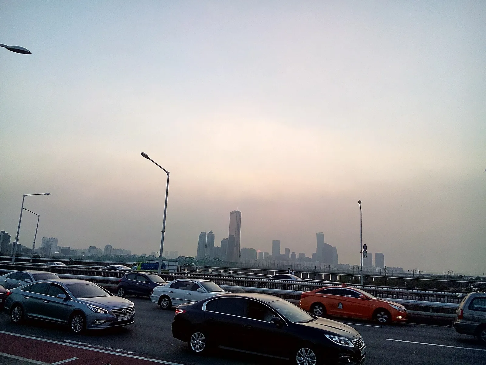
▲ 서울 한강변 교량 위 차량 행렬. 도시 간선도로는 해가 진 직후 밝기 변화가 가장 크다 ⓒ Maksimilian karlovich / Wikimedia Commons (CC BY-SA 4.0)
5. 일몰 직후, 왜 앞이 안 보이는가 — 눈부심·시인성 저하의 원인
아래는 통계가 아니라 광학·생리 측면의 일반적 설명이다. 구체적 수치는 단정하지 않았다.
| 원인 | 메커니즘 | 자주 겹치는 상황 |
|---|---|---|
| 낮은 태양의 역광 | 태양 고도가 낮아 앞유리 정면으로 직접 들어와 앞차·신호등 식별 곤란 | 서쪽으로 향하는 도로, 오르막 정점 |
| 앞유리 오염·유막 | 유리 위 먼지·유막이 빛을 산란시켜 번짐이 커짐 | 세차 안 한 앞유리, 와이퍼 흔적 |
| 눈의 명암 적응 지연 | 밝은 환경에서 어두운 환경으로 바뀔 때 눈이 적응하는 데 시간이 걸림 | 터널 진출입, 해가 진 직후 어두운 가로 |
| 노면·보행자 대비 감소 | 하늘은 밝아도 노면과 어두운 옷은 대비가 낮아짐 | 횡단보도 주변, 이면도로 |
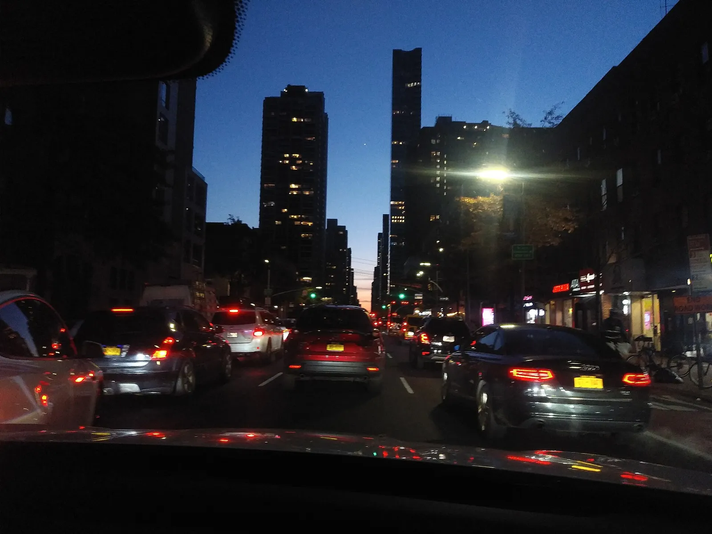
▲ 하늘엔 푸른빛이 남았지만 차 안에서 보는 앞차와 도로는 이미 어둡다. 참고 이미지(미국 뉴욕 맨해튼) ⓒ Electric2010 / Wikimedia Commons (CC BY-SA 4.0)
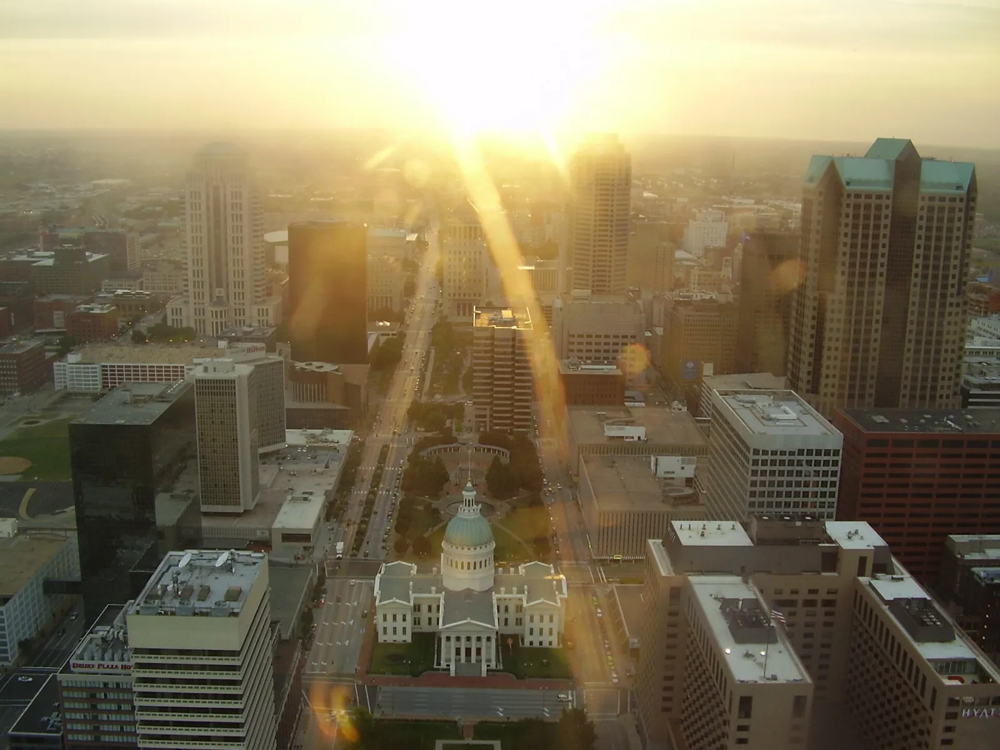
▲ 태양이 낮게 걸리면 강한 빛줄기와 번짐으로 도로 위 물체가 묻힌다. 참고 이미지(미국 세인트루이스 도심) ⓒ Leslie / Wikimedia Commons (CC BY-SA 2.5)
특히 앞유리 안쪽의 유막은 역광에서 빛번짐을 크게 키운다. 비 오는 밤 헤드라이트가 번져 보이는 증상의 원인도 같다. 이 부분은 앞유리 유막 제거 기사에서 따로 정리했다.
| 원인 | 지금 할 일 | 피할 것 |
|---|---|---|
| 낮은 태양 역광 | 선바이저를 내리고 차간거리를 평소보다 넓힌다. 신호등이 안 보이면 교차로 접근 전 미리 감속한다 | 앞차를 바짝 따라가며 브레이크등만 보고 운전하기 |
| 앞유리 유막·먼지 | 해 지기 전 앞유리 안쪽과 바깥쪽을 닦는다. 역광 번짐이 줄어든다 | 와이퍼로 마른 유리를 문질러 닦기 |
| 명암 적응 지연 | 터널 진입 전 전조등 점등(도로교통법 제37조제1항제3호는 터널 안 점등을 의무로 정함). 진출 직후 속도와 차간거리 유지 | 터널 출구에서 급가속 |
| 마주 오는 전조등 | 시선을 우측 차선 경계선에 둔다. 내 쪽은 하향등 유지(시행령 제20조는 마주보고 진행할 때 밝기를 줄이거나 아래로 향하게 하도록 정함) | 상향등 맞대응 |
| 보행자 대비 감소 | 횡단보도 접근 전 미리 감속, 우회전은 일시정지 후 좌우 확인(우회전 일시정지 가이드) | "파란불이니 서행 통과"라는 가정 |
| 비·안개와 겹칠 때 | 낮이어도 전조등 점등(법 제37조제1항제2호). 안개 속 상향등은 등화 상황별 정리 참고 | 안개에 상향등 |
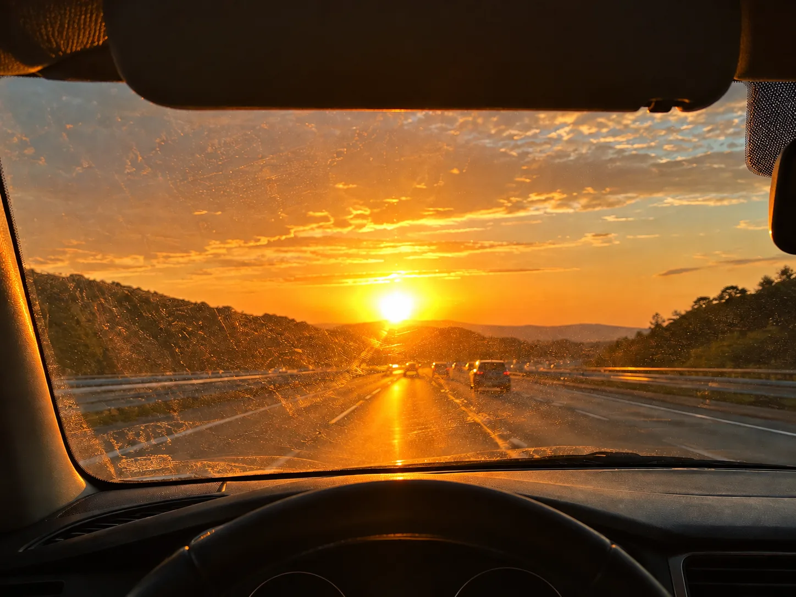
▲ 낮은 해가 정면으로 들어오면 앞유리의 먼지·유막이 빛을 번지게 해 앞차와 노면이 더 묻힌다. 설명용 AI 생성 이미지 ⓒ AI 생성 이미지(카프리즘 제작)
📍 마주 오는 전조등이 눈부실 때
일몰 이후에는 마주 오는 차의 전조등이 가장 큰 눈부심 원인이 된다. 하이빔 사용 에티켓과 대응법은 상향등 에티켓 가이드에 정리돼 있다. 정면을 응시하지 않고 시선을 우측 차선 경계선 쪽에 두면 눈부심 영향을 줄일 수 있다.
6. 운전자 대응 체크리스트 — 해 지기 전과 후
| 상황 | 해야 할 일 | 이유 |
|---|---|---|
| 일몰 15~30분 전(서울 10월 중순 이후 17시 30분대) | 전조등 수동 점등 습관화 | 상대방이 내 차를 보게 하는 목적. 일몰 전 점등은 권장 사항(카프리즘 권고)이지 법적 기준은 아님 |
| 일몰 직후 박명 구간 | 오토라이트라도 계기판이 아닌 후미등 점등 확인 | 차종에 따라 주간주행등만 켜지고 후미등이 꺼진 채일 수 있음 |
| 서향 도로 역광 | 선바이저 사용, 차간거리 확대, 앞유리 안쪽 닦기 | 역광 중 앞차 브레이크등 인지가 늦어짐 |
| 선글라스 착용 | 일몰 직전까지만, 해 지면 즉시 해제 | 어두워진 후 착용은 시야를 더 줄임. 편광은 일부 디스플레이가 어둡게 보일 수 있음 |
| 횡단보도·이면도로 접근 | 미리 감속, 우회전 시 일단 정지 후 좌우 확인 | 어두운 옷의 보행자는 가장 늦게 식별된다 |
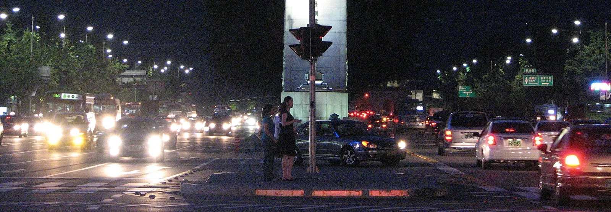
▲ 횡단 대기 중인 보행자와 전조등의 거리가 가까울수록 반응 시간은 짧아진다 (서울 세종대로) ⓒ Ian Muttoo / Wikimedia Commons (CC BY-SA 2.0)
✅ 법과 현실 — 전조등은 언제 켜야 하나
· 도로교통법 제37조제1항은 밤(해가 진 후부터 해가 뜨기 전까지), 안개가 끼거나 비·눈이 올 때, 터널 안에서 도로를 운행하거나 고장 등으로 정차·주차할 때 전조등, 차폭등, 미등과 그 밖의 등화를 켜도록 정한다
· 법적 기준 시각은 "해가 진 후"이지만, 실제로는 일몰 15~30분 전 점등을 권장한다(카프리즘 권고, 법적 기준 아님)
· 시행령 제19조에 따르면 운행 중 자동차가 켜야 할 등화는 전조등·차폭등·미등·번호등이고(실내조명등은 승합자동차와 여객용 승용자동차만), 정차·주차 중에는 미등과 차폭등이다. 시행령 별표 8의 등화 점등·조작 불이행 범칙금은 승용자동차 2만원이다(안개·비·눈 때는 제외로 표기). 국가법령정보센터 조회 기준 시행 버전은 법 2026.7.1., 시행령 2026.10.2.이다
· 낙엽이 쌓인 도로·단풍 나들이길에서는 어두워지기 전부터 속도를 더 낮추는 것이 좋다 — 낙엽 쌓인 도로 제동거리 기사 참고
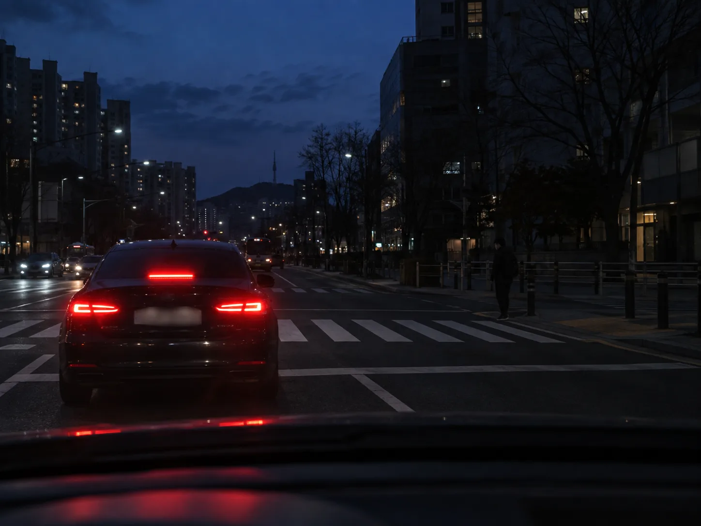
▲ 박명 구간에서는 어두운 옷의 보행자가 배경에 묻혀 가장 늦게 보인다. 설명용 AI 생성 이미지이며 실제 장소가 아님 ⓒ AI 생성 이미지(카프리즘 제작)
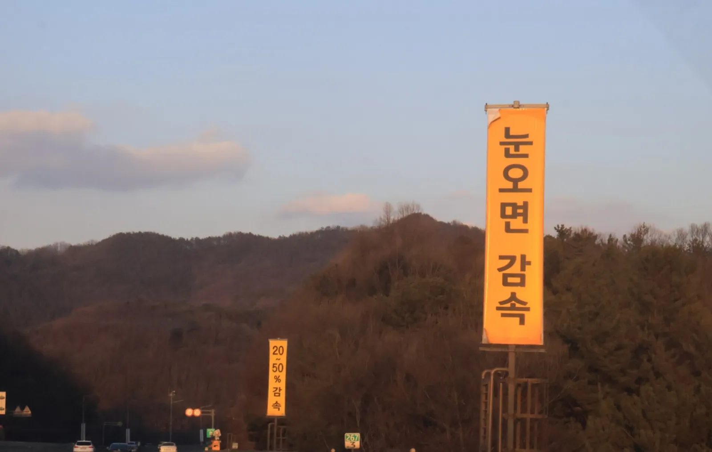
▲ 노을이 남은 가을 저녁의 한국 도로. 현수막 글씨가 보이는 하늘은 밝아도 도로면은 이미 어둡게 가라앉는다 ⓒ Hankook12 / Wikimedia Commons (CC0)
7. 단풍 나들이 귀가길 — 일몰이 겹치는 시간대
가을에는 퇴근길만이 아니라 주말 단풍 나들이 귀가길도 일몰과 겹친다. 오후 4~5시에 출발해 귀가하는 차량이 몰리면 고속도로 정체 중 일몰을 맞게 된다. 단풍 절정 시기는 2026년 단풍 절정 시기 데이터에서 확인할 수 있다.
✅ 귀가 시각 정하기
· 서울 기준 10월 중순 일몰은 17시 50분대, 11월 초는 17시 30분대다. 일몰 전 마지막 1시간 동안은 이미 시야 조건이 바뀌기 시작한다
· 산간 구간은 지형에 따라 도심보다 먼저 그늘이 지는 곳이 있으므로, 계산표의 일몰 시각보다 일찍 어두워진다고 생각하는 편이 안전하다(일반적 주의, 수치 근거는 확인하지 않음)
· 장거리 귀가라면 일몰 1시간 전 출발 또는 일몰 후 휴식 후 출발 중 하나를 선택하자
8. 자주 묻는 질문
| 질문 | 답 |
|---|---|
| 일몰 몇 분 전부터 전조등을 켜나요? | 법은 "해가 진 후"를 밤으로 본다(제37조제1항제1호). 일몰 전 점등은 카프리즘 권고이며, 비·눈·안개나 터널 안이라면 낮에도 켜야 한다. |
| 오토라이트면 신경 안 써도 되나요? | 센서가 밝다고 판단하는 박명 구간에는 주간주행등만 켜지고 후미등이 꺼진 채인 차종이 있을 수 있다. 일몰 직후에는 점등 상태를 직접 확인하자. |
| 10월 야간 사고가 가장 많은데 사망도 가장 많나요? | 아니다. 2025년 야간 사고는 10월 6,327건으로 최다지만 야간 사망자는 8월(113명)과 11월(109명)이 더 많았다. |
| 서울 기준 일몰표를 지방에서도 쓸 수 있나요? | 인천·대전은 서울과 2분 이내, 부산·대구·강릉은 2~8분 일찍 어두워지고 광주·제주는 늦다. 11월 1일 서울 18:00 퇴근은 일몰 26분 후다. |
9. 요약
10월 13일(서울)을 기점으로 18시 퇴근은 일몰 이후가 된다. 일몰이 가장 빠른 시기는 11월 말~12월 8일 전후(서울 17:13~14, 부산 17:11 안팎, 이 기간 하루 변화는 1분 미만)이며, 서울에서 18시 퇴근 시점은 11월 중순부터 일몰 39분 후, 시민박명이 끝난 뒤의 밤이 된다. 모든 시각은 KASI 공개 계산식을 카프리즘이 실행한 값이고 1~2분 오차가 있을 수 있다.
2024년 경찰청 통계에서 16~18시(27,479건)와 18~20시(27,002건)가 하루 중 사고가 가장 많았고, 2025년 도로교통공단 월별 통계에서 10월 야간 사고는 6,327건·비중 37.0%로 연중 최고였다. 다만 교통량 보정이 없고, 퇴근 시간대 사망자 수는 확인하지 못했으므로 "일몰이 사고를 늘렸다"고 단정할 수 없다.
운전자가 할 수 있는 일은 단순하다. 일몰 15~30분 전 전조등을 켜고, 앞유리 안쪽을 닦고, 역광 구간에서는 차간거리를 늘리며, 횡단보도 접근 속도를 낮추는 것이다. 마주 오는 전조등 눈부심은 시선을 우측으로 돌려 피하자.